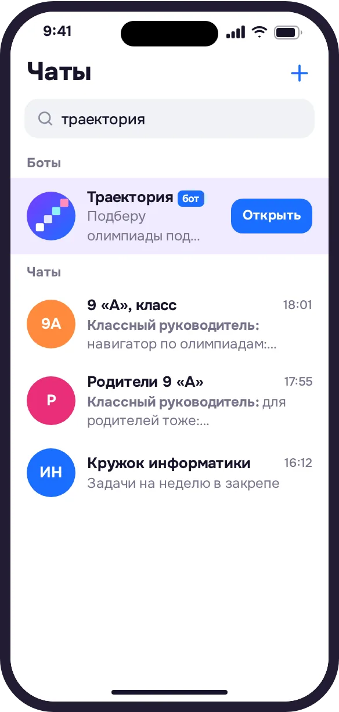
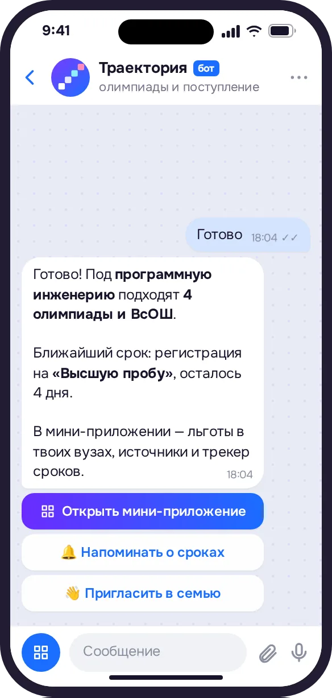
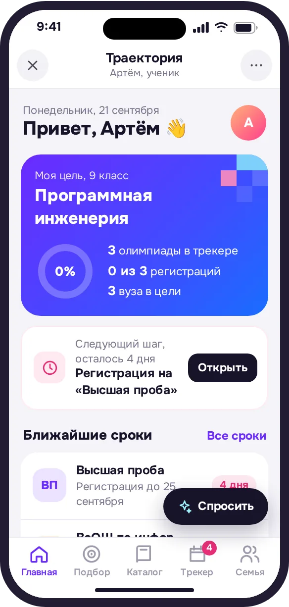
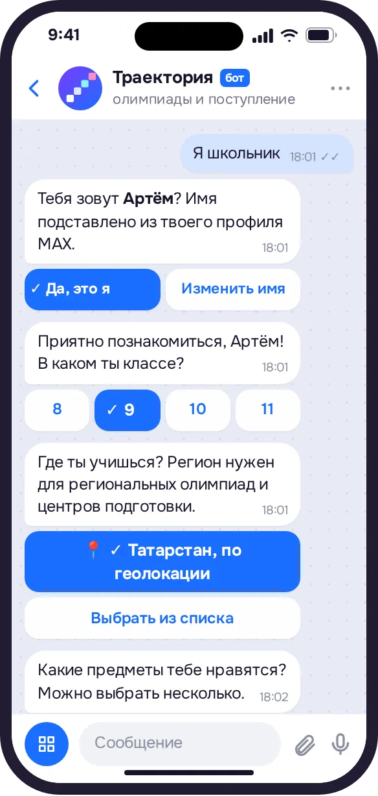
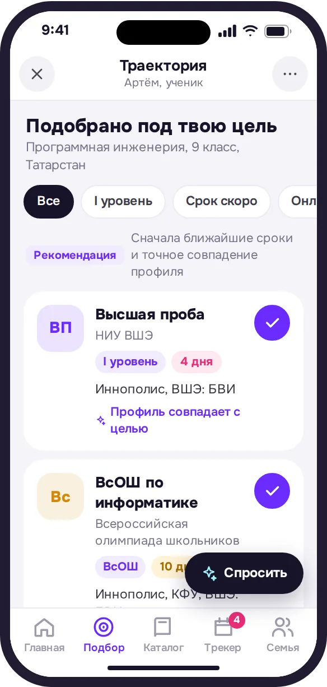
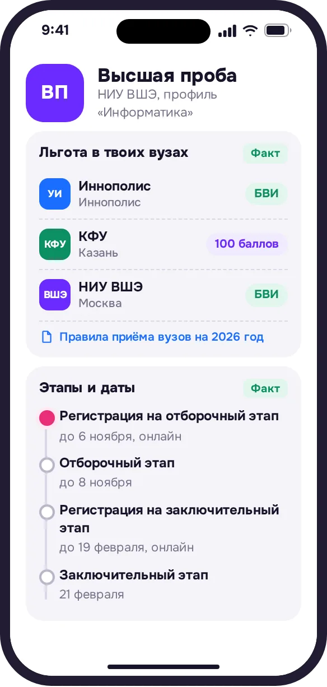
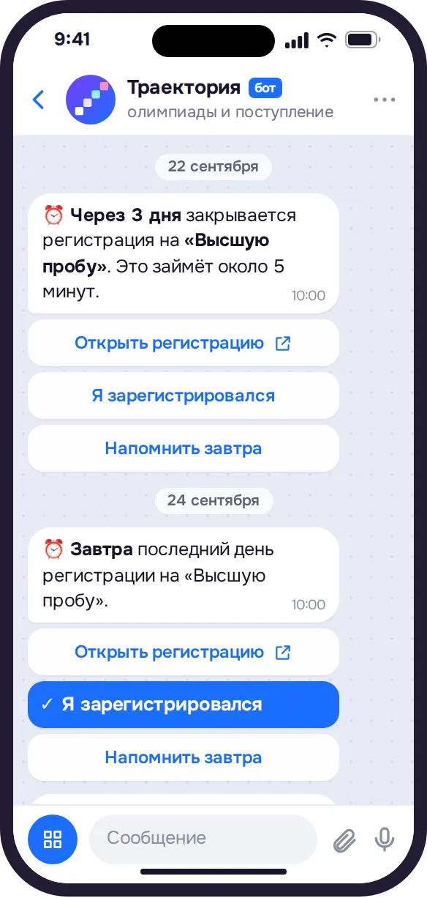
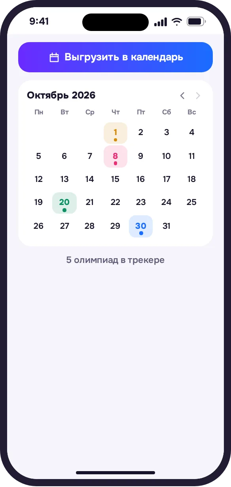
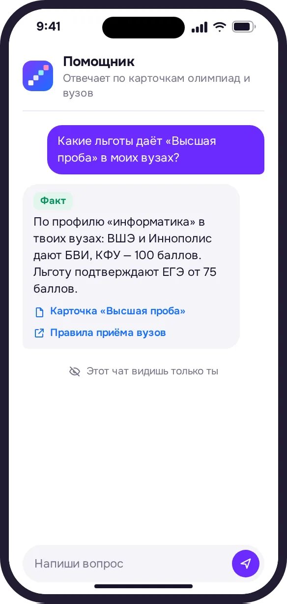
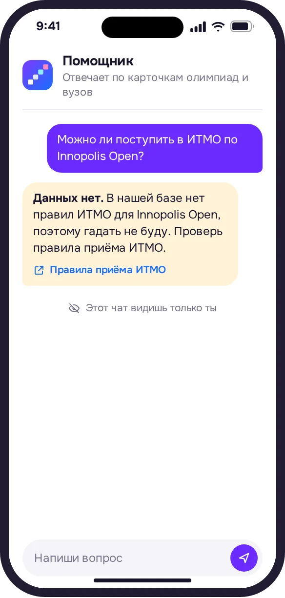

Откройте бота в MAX
Кнопка ведёт прямо в чат. Ничего устанавливать не нужно.
Открыть бота
Подборка олимпиад под цель, льготы в твоих вузах и напоминания о сроках — для всей семьи.
Бот подбирает олимпиады под цель ученика, показывает льготы в его вузах со ссылкой на источник и напоминает о сроках всей семье.


олимпиады из перечня дают льготы при поступленииолимпиады из перечня дают льготы
профилей, у каждого свой уровеньпрофилей, у каждого свой уровень и классы
учитываемых олимпиад: каждый вуз решает самолимпиад: каждый вуз решает сам
абитуриентов не хватало информации о поступлении
Всё это разбросано по сотням сайтов, и о сроках никто не напоминает. «Траектория» собирает это в одном чате.
Как это работаетИсточники: приказ Минобрнауки № 669; проект перечня на 2026/27; пресс-служба МФТИ, 2025; опрос 4005 первокурсников, 2025.
Перечень олимпиад на 2025/26, приказ Минобрнауки № 669; МФТИ — пресс-служба вуза, 2025; опрос 4005 первокурсников, 2025.
Короткий ролик о том, как бот и мини-приложение в MAX ведут от цели к олимпиадам, льготам в вузах и напоминаниям о сроках. Лучше со звуком.
В ролике: у олимпиад десятки профилей, а у каждого вуза свои правила. «Траектория» задаёт несколько вопросов в чате MAX, собирает подбор под цель, показывает льготы в вузах ученика с источником, напоминает о сроках всей семье, а ИИ-помощник отвечает только по базе.
«Траектория» живёт в одном чате MAX: сначала бот задаёт пару вопросов, потом в этом же чате открывается мини-приложение.
«Траектория» живёт в одном чате MAX: сначала бот задаёт пару вопросов, потом там же открывается мини-приложение.
Кнопка ведёт прямо в чат. Ничего устанавливать не нужно.
Открыть бота
Класс, регион, любимые предметы, цель и вузы. Нет цели? Бот поможет найти её по интересам.
Класс, регион, любимые предметы, цель и вузы.

Бот соберёт подборку и пришлёт кнопку «Открыть мини-приложение» — оно откроется прямо поверх чата.
Бот пришлёт кнопку «Открыть мини-приложение» — подборка откроется поверх чата.

Это продолжение того же чата: ответы боту уже в профиле, а напоминания бот пришлёт туда же, где вы с ним общались.
Это продолжение того же чата: ответы боту уже в профиле, а напоминания бот пришлёт туда же.
Выберите олимпиаду — и сразу видно, что она даст в каждом вашем вузе.
Сразу видно, что даст олимпиада в каждом вашем вузе: БВИ — поступление без экзаменов или 100 баллов ЕГЭ.

Олимпиада попадает в трекер одной кнопкой. Напоминания приходят в чат MAX за месяц, неделю, три дня и накануне, а все сроки можно выгрузить в свой календарь.
Трекер в одну кнопку, напоминания в чат и выгрузка сроков в ваш календарь.


Отвечает только по карточкам олимпиад и вузов из базы: у каждого факта есть ссылка на первоисточник. Если ответа нет, так и скажет.
Отвечает только по базе, у каждого факта есть первоисточник. Нет ответа — так и скажет.


Понятный путь к своему вузу
Видите сроки и понимаете льготы
Олимпиадный сезон для всего класса
Ссылка на бота для чата класса в пару касаний.
В каталоге олимпиад школьник ищет сам. «Траектория» сама подбирает олимпиады, показывает условия вузов этого ученика и напоминает о сроках.
Не нашли ответ? Спросите помощника прямо в боте.
Нет. Бот и мини-приложение работают внутри MAX: достаточно открыть чат с ботом. Мини-приложение открывается поверх чата, профиль в нём уже заполнен ответами из диалога.
Нет. Бот и мини-приложение работают внутри MAX: достаточно открыть чат с ботом. Мини-приложение открывается поверх чата, профиль уже заполнен ответами из диалога.
Зачисление без вступительных испытаний: с дипломом победителя или призёра можно поступить без конкурса по баллам ЕГЭ на направление, которое соответствует профилю олимпиады. Воспользоваться БВИ можно только в одном вузе и на одной программе.
Зачисление без вступительных испытаний: с дипломом победителя или призёра можно поступить без конкурса по баллам ЕГЭ на направление по профилю олимпиады. БВИ можно использовать только в одном вузе и на одной программе.
Диплом засчитывается как 100 баллов по вступительному испытанию того предмета, которому соответствует олимпиада. Остальные экзамены сдаются как обычно. Эту льготу можно использовать в каждом вузе, куда ученик подаёт документы.
Диплом засчитывается как 100 баллов по вступительному испытанию профильного предмета. Остальные экзамены сдаются как обычно. Эту льготу можно использовать в каждом вузе.
Да. Льготу по олимпиаде из перечня подтверждают результатом ЕГЭ по профильному предмету не ниже 75 баллов, а вуз вправе поставить порог выше. Если порог выше, это написано в карточке олимпиады под этим вузом.
Да. Льготу по олимпиаде из перечня подтверждают ЕГЭ по профильному предмету не ниже 75 баллов, а вуз вправе поставить порог выше.
Создатель траектории удаляет её вместе со всеми данными командой /delete в чате бота. Остальные участники могут просто выйти из траектории во вкладке «Семья».
Создатель траектории удаляет её вместе с данными командой /delete. Остальные участники могут выйти из траектории во вкладке «Семья».
Откройте бота, ответьте на вопросы и получите олимпиады, которые ведут в ваши вузы.
Открыть в MAX